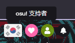

——我至死是少年。
有忙了一天，真的好累好累，主要是需要考虑的东西太多。
H—me:你也是头铁，非要从头写整一个项目。
L-me:可是，那样真的很酷啊！
H-me:这不行的，光是各种资源都找死人了。
L-me:没事，我有钞能力，淘宝可以购买各种素材。
H—me:游戏呢？
L-me:别游戏了，这边的UI界面，游戏加载器，等一堆乱七八糟的东西还没写完呢。
H—me:打算做什么？
L-me:暂定为双摇杆射击。
H—me:涉及什么技术难点？
L-me:寻路算法，shader，对象池，视角控制等。
H—me:预期多久？
L-me:本来预期一个月的，其实如果利用旧的项目直接做，是非常足够的，但是现在用的船新版本，重头来过，耗时更多。
先这样吧，到底还是要做的，避不开的，干他娘的。
之前被朋友看到我是osu!的支持者，
“高贵的supporter/wow such money”
hhh 乐
我在想着要不要也送朋友一个月，让朋友也高贵一下（
话说啊，阿雨，你一把年纪了，都快28了，女朋友也不找，啥时候结婚啊？
不嘛不嘛不嘛。
我还没老呢，游戏这么好玩，歌曲这么好听，世界还有大把大把的美好，
那两个人一起不好么？
很好啊，但是想找对的人不容易哟。
就算磨合，起码也要找个“材质”差不多的，才有磨合的可能嘛。
所以呢，其实阿雨已经降低了很多的要求，放弃了很多不是很切实际的想法。
希望有朝一日你能看到，我喜欢你。
昨天做了个梦，算是美梦吧？
居然有个退隐的日本女艺人（别问，我真的想不到是哪一种。）约我逛街，请我吃好吃的。
梦里的最后，我看到了两只猫猫，一只是梨花，一只是橘猫，就是普普通通的猫猫，不同的是，
两只猫猫的腹部侧面有那种木炭烧穿的痕迹，并且从缝隙朝里看，能看到猫猫的肚子里边像一个装满了炽热木炭的熔炉。
阿雨，你的梦想是啥？
我依旧牢牢记得，我小时候的梦想是做一名科学家。毫无疑问地，这和当时的氛围有关系。
我是90后，成长的年代依旧存在着浓郁的崇尚科学的氛围。
我还是一名骄傲的少先队员。
当然，现在一切都变了。
我现在的梦想？唉，我也不知道是啥哟。
希望变好一点吧。
这几天写了一下（摸鱼）了好久的laya，终于能有界面了（bushi
反正就是，第三天。继续加油吧。
话说凤梨真的能让精液味道变好？
有机会试试。